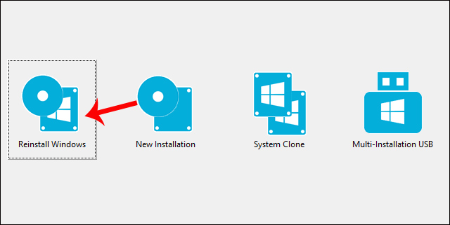

Sữ dụng phần mềm WinToHdd để cài đặt và nhân bản Windown
WinToHDD 2021 là một công cụ mạnh mẽ cho phép bạn cài đặt, cài đặt lại và sao chép hệ thống đã cài đặt Windows mà không cần ổ đĩa CD, DVD hoặc USB.Đây là một ứng dụng tiện dụng cung cấp giải pháp hoàn hảo để cài đặt Windows trên thiết bị không có ổ đĩa quang hoặc thậm chí khi bạn không có ổ đĩa flash-USB.
Chương trình được đóng gói với giao diện quen thuộc và đơn giản, dễ hiểu và rõ ràng. Nó chỉ có ba nút:
Một nút để cài đặt lại hệ điều hành
Nút thứ hai để cài đặt Windows trên thiết bị lưu trữ thứ hai
Nút cuối cùng là để tạo bản sao của hệ thống .
Thời gian gần đây ổ cứng SSD ra đời với nhiều ưu điểm vượt trội, các bạn nâng cấp máy tính của mình từ HDD lên SSD và M2 khá nhiều, do vậy mình nghĩ đây là giải pháp hoàn hảo để chuyển DATA từ HDD sang SSD.
Link download tại:
Download tại đây
Các bạn xem thêm hướng dẫn tại Video của bạn này nha, có những cái mình thấy nhiều bạn làm khá đầy đũ rồi nên không viết lại tốn thời gian, chỉ để lên đây để chia sẽ và sau này tìm lại cho dễ.
Xem hướng dẫn tại đây
CHÚC CÁC BẠN CÀI ĐẶT THÀNH CÔNG!!!
